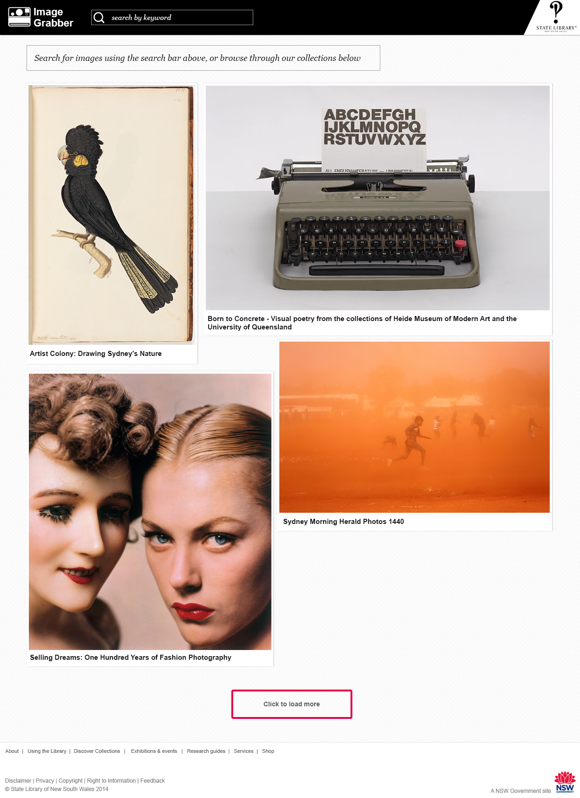

Simple demonstration application to use the State Library of NSW FunnelBack API.
Simple demonstration application to use the State Library of NSW FunnelBack API. As the name suggests it grab images and displays them in a nice image gallery that uses the jQuery masonry plugin.
To use this tool simply download the archive file (zip for Windows, gz for *nix), extract all contents into any directory, then open 'index.html' in either Firefox or Chrome (IE10+ now only supports the indexed DB asynchronous API).
To search simply enter a string into the search bar (middle top) and press enter. Some nice search strings to get you started include .... 'First World War', 'Holtermann', 'World War I' .... but almost all search strings should return some images. To load more images simply scroll to the bottom of the browser and more images will be loaded.
This app was written in a few hours (most of the time spent on design elements) using the HTML5 boilerplate with some jQuery, xml and Masonry goodness thrown in.
